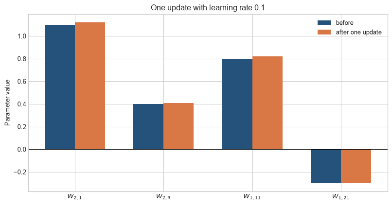
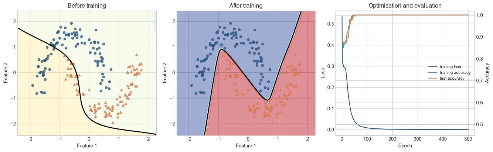
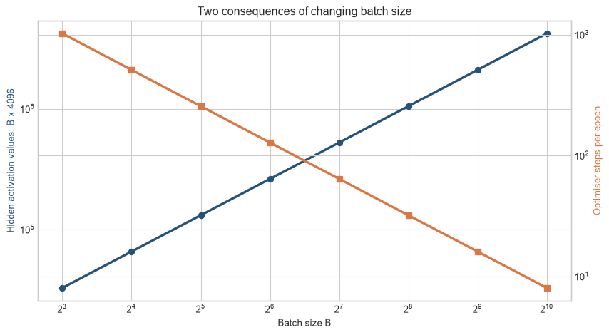

The preceding chapters separated the components of neural-network learning. A useful model has to connect them in the right order: representations pass through layers and activations, a loss compares scores with labels, backpropagation calculates gradients, and an optimiser changes parameters before the next batch arrives.
This chapter assembles those operations into one small binary classifier. The synthetic data do not stand in for a real population. They make one property visible: a straight decision boundary is inadequate, while a small network can learn a curved boundary. The task is to inspect the training system, not to claim a benchmark result.
The data boundary
The dataset contains 240 two-dimensional observations arranged as two noisy interlocking curves. The label indicates which curve generated an observation. The training set contains 192 observations and the test set contains 48. Input standardisation uses the training-set mean and standard deviation; test-set information is not used to define the transformation.
Before looking at the training loop, inspect the data. The two curves are deliberately arranged so that one straight line cannot separate them. Outlined observations are held out from fitting, so they can later show whether the learned boundary extends beyond the examples used for updates.
Figure 9.1: The synthetic task contains two classes with a curved boundary; colour shows the label and marker shape shows the data split.
The outlined test observations follow the same data-generating process but remain outside training. This split is sufficient for explaining the mechanics. It is not sufficient evidence for selecting an architecture or estimating expected performance in a real application; Chapters 9 and 10 examine generalisation and regularisation in detail.
Training loop. The repeated sequence that selects a batch, runs a forward calculation, evaluates a loss, calculates gradients, and updates parameters. Its state includes more than model weights when resuming a run: optimiser state, random-number state, data order, and fitted preprocessing can change later updates or predictions.
Level 1 - Intuition
The training loop is the point at which the preceding chapters become one procedure. Follow one cycle before reading the implementation: select a batch, calculate scores, measure their error, send gradients backwards, and update the weights that will be used for the next batch.
Training is a repeated comparison followed by a correction
A neural network begins with parameter values that do not yet encode the pattern in the data. It processes a batch and produces predictions. The loss measures the disagreement between those predictions and the labels. Backpropagation attributes part of that loss to each parameter, and the optimiser makes a small update intended to reduce future loss.
The update does not edit a prediction directly. It changes weights and biases. Every later prediction is recalculated through the revised network. Learning is the accumulated result of many such updates.
Figure 9.2: A training loop connects a batch, forward pass, loss, backpropagation, and parameter update before processing the next batch.
Each box has one role. The batch supplies inputs and labels. The forward pass produces logits. The loss turns the logits and labels into a scalar training objective. Backpropagation calculates gradients of that scalar with respect to the parameters. The optimiser uses the gradients to update the parameters. Reversing any of these dependencies would change or invalidate the algorithm.
The network creates a boundary by combining simple transformations
The model used here has two input features, sixteen hidden units with tanh activations, and one output logit. Each hidden unit creates one transformed view of the input. The output layer combines those sixteen values. Because tanh is nonlinear, the resulting boundary can bend around the interlocking classes.
The output is a logit rather than a probability. A sigmoid transformation converts it into a number between zero and one when a probability is required for interpretation or classification. During training, the loss receives the logits directly because the combined logit-and-loss calculation is more numerically stable.
Training success is narrower than model usefulness
A falling training loss shows that the optimiser is fitting the training objective. It does not show that the labels are valid, that performance transfers to another population, or that the resulting decision is appropriate. The synthetic example controls the label-generating process and is used only to expose the computation. A real model requires evidence about measurement, generalisation, calibration, errors across relevant groups, and consequences of use.
Level 1 identifies the loop and its evidential boundary. Level 2 follows one observation through the operations that the loop repeats.
The loop gives the sequence, but a reliable implementation needs each stage to retain its own role. The next level traces the objects passed between stages and explains why a prediction, a probability, a loss, and a gradient are not interchangeable.
Level 2 - Mechanics
One observation moves forward through six calculations
To keep the arithmetic visible, use a smaller network with two inputs, three hidden units, and one output. For \(x=(0.6,-0.2)\), let
The first pre-activation is \(z_1=W_1x+b_1=(0.66,-0.56,0.20)\). ReLU gives \(h=(0.66,0,0.20)\). With output weights \(W_2=(1.1,-0.7,0.4)\) and bias \(b_2=-0.1\), the logit is \(s=W_2h+b_2=0.706\). Sigmoid converts it to \(p=0.670\). If \(y=1\), binary cross-entropy is \(L=-\log(p)=0.401\).
The model assigns more probability to the correct class than to the alternative, but the loss remains positive because the predicted probability is below one.
Figure 9.3: One observation becomes hidden pre-activations, activated values, a logit, a probability, and finally a loss.
The intermediate values make errors diagnosable. A wrong shape appears at the layer calculation. An unexpected zero appears after ReLU. A probability outside \((0,1)\) indicates that sigmoid was omitted or misapplied. A non-scalar per-observation loss may indicate that reduction has not yet been performed.
The negative sign says that increasing the logit would reduce the loss for this positive-labelled observation. The output-weight gradient is \(\delta_s h\), and the output-bias gradient is \(\delta_s\). The gradient arriving at the hidden activations is \(W_2^\top\delta_s\).
ReLU blocks the gradient through the second hidden unit because its pre-activation was negative. The other two units pass their gradients. The same chain rule used in Chapter 4 therefore produces gradients for every parameter in both layers.
Code
p_example=1/(1+np.exp(-0.706)); delta_s=p_example-1h_example=np.array([0.66,0.0,0.20]); x_example=np.array([0.6,-0.2])w2_example=np.array([1.1,-0.7,0.4]); z_example=np.array([0.66,-0.56,0.20])delta_z=(w2_example*delta_s)*(z_example>0)grad_w1=np.outer(delta_z,x_example); grad_w2=delta_s*h_example; learning_rate=0.1before=np.array([1.1,0.4,0.8,-0.3])after=np.array([1.1-learning_rate*grad_w2[0],0.4-learning_rate*grad_w2[2],0.8-learning_rate*grad_w1[0,0],-0.3-learning_rate*grad_w1[1,0]])labels=[r"$W_{2,1}$",r"$W_{2,3}$",r"$W_{1,11}$",r"$W_{1,21}$"]positions=np.arange(len(labels)); width=0.34fig,ax=plt.subplots(figsize=(8.5,4.5))ax.bar(positions-width/2,before,width,label="before",color=blue)ax.bar(positions+width/2,after,width,label="after one update",color=orange)ax.axhline(0,color="black",linewidth=0.8); ax.set_xticks(positions,labels)ax.set_ylabel("Parameter value"); ax.set_title("One update with learning rate 0.1"); ax.legend()plt.tight_layout(); plt.show()

Figure 9.4: A gradient-descent update moves selected parameters in the direction that lowers the current observation’s loss.
The changes are intentionally small. The fourth parameter feeds the inactive second hidden unit, so its gradient is zero for this observation and its bar does not move. A batch can produce a non-zero gradient for the same parameter if other observations activate that unit.
A mini-batch loop repeats four actions
For each batch, an implementation normally clears stored gradients, runs the forward pass and loss, runs backpropagation, and asks the optimiser to update the parameters. PyTorch accumulates gradients by default. Omitting the clearing step therefore adds the current batch gradient to gradients already stored on each parameter. Gradient accumulation can be deliberate when several micro-batches should form one larger effective batch. Without that intention, it changes the update rule.
Evaluation uses the model without parameter updates
Evaluation requires no backward pass or optimiser step. The model should be placed in evaluation mode because dropout and batch normalisation behave differently during training. Gradient tracking should also be disabled to reduce memory use. This network contains neither dropout nor batch normalisation, but using the correct pattern prevents errors when the architecture changes.
Level 2 has followed the order of operations. Level 3 writes the same system in matrix notation and executable code.
The mechanics establish the contract for one training step. The mathematics and code below repeat that contract across batches and make the parameter updates observable rather than treating the framework as a black box.
Level 3 - Mathematics & Code
The batch equations define the complete model
For \(X\in\mathbb{R}^{B\times2}\), hidden width \(H=16\), and \(y\in\{0,1\}^B\),
In code, BCEWithLogitsLoss receives \(s\) and \(y\) and combines sigmoid with cross-entropy. This avoids explicitly calculating logarithms of probabilities that may round to zero or one.
The second row of dW1 is zero because the second hidden unit is inactive. The remaining gradients match the dependency chain described in Level 2. A vectorised batch implementation replaces outer products with matrix multiplications and averages or sums gradients according to the loss reduction.
PyTorch separates model, loss, and optimiser
Code
import torchfrom torch import nntorch.manual_seed(27)X_train=torch.tensor(X_train_np,dtype=torch.float32)y_train=torch.tensor(y_train_np,dtype=torch.float32).unsqueeze(1)X_test=torch.tensor(X_test_np,dtype=torch.float32)y_test=torch.tensor(y_test_np,dtype=torch.float32).unsqueeze(1)model=nn.Sequential(nn.Linear(2,16),nn.Tanh(),nn.Linear(16,1))loss_function=nn.BCEWithLogitsLoss()optimiser=torch.optim.Adam(model.parameters(),lr=0.03)parameter_count=sum(parameter.numel() for parameter in model.parameters())print(model);print("Trainable parameters:",parameter_count)
The first layer has \(16(2+1)=48\) parameters and the output layer has \(1(16+1)=17\), for a total of 65. The loss function contains no learned parameters. The optimiser stores references to the model parameters and applies the selected update rule.
The complete loop is short because autograd carries the graph
Final training loss: 0.000
Training accuracy: 1.000
Test accuracy: 1.000
The loop follows the Level 1 diagram literally. zero_grad() clears stored gradients; the model produces logits; the loss returns one scalar; backward() calculates parameter gradients; and step() updates the parameters. Metrics are calculated with gradient tracking disabled. Accuracy uses a threshold of 0.5 for this balanced illustrative task; a real threshold should reflect the costs and constraints of the application.
Training changes the loss and the decision boundary
Code
grid_x,grid_y=np.meshgrid(np.linspace(X_train_np[:,0].min()-0.5,X_train_np[:,0].max()+0.5,220), np.linspace(X_train_np[:,1].min()-0.5,X_train_np[:,1].max()+0.5,220))grid=torch.tensor(np.column_stack([grid_x.ravel(),grid_y.ravel()]),dtype=torch.float32)trained_state={name:value.detach().clone() for name,value in model.state_dict().items()}with torch.no_grad(): trained_surface=torch.sigmoid(model(grid)).numpy().reshape(grid_x.shape)model.load_state_dict(initial_state)with torch.no_grad(): initial_surface=torch.sigmoid(model(grid)).numpy().reshape(grid_x.shape)model.load_state_dict(trained_state)fig,axes=plt.subplots(1,3,figsize=(14,4.4))for ax,surface,title inzip(axes[:2],[initial_surface,trained_surface],["Before training","After training"]): ax.contourf(grid_x,grid_y,surface,levels=np.linspace(0,1,11),cmap="RdYlBu_r",alpha=0.48) ax.contour(grid_x,grid_y,surface,levels=[0.5],colors="black",linewidths=2)for class_value,colour,marker in [(0,blue,"o"),(1,orange,"^")]: mask=y_train_np==class_value ax.scatter(X_train_np[mask,0],X_train_np[mask,1],c=colour,marker=marker,s=22,alpha=0.72) ax.set_title(title); ax.set_xlabel("Feature 1"); ax.set_ylabel("Feature 2")epoch_axis=np.arange(1,epochs+1)axes[2].plot(epoch_axis,history["loss"],color=blue,label="training loss")accuracy_axis=axes[2].twinx()accuracy_axis.plot(epoch_axis,history["train_accuracy"],color=teal,label="training accuracy",alpha=0.9)accuracy_axis.plot(epoch_axis,history["test_accuracy"],color=orange,label="test accuracy",alpha=0.9)axes[2].set_xlabel("Epoch"); axes[2].set_ylabel("Loss",color=blue)accuracy_axis.set_ylabel("Accuracy"); accuracy_axis.set_ylim(0.45,1.02)axes[2].set_title("Optimisation and evaluation")lines1,labels1=axes[2].get_legend_handles_labels(); lines2,labels2=accuracy_axis.get_legend_handles_labels()axes[2].legend(lines1+lines2,labels1+labels2,loc="center right",fontsize=8)plt.tight_layout(); plt.show()

Figure 9.5: Training lowers the batch-averaged loss and changes an initially arbitrary boundary into one that follows the curved class pattern.
The initial boundary is determined by random initialisation. The trained boundary follows the curved pattern because the hidden activations allow the effective slope to change across input regions. The loss records the training objective; the accuracy curves apply a threshold and discard information about confidence. They answer different questions and need not move together at every epoch.
A checkpoint must match the intended recovery task
Weights alone are enough for inference if the architecture and input transformation are known. Resuming training also requires optimiser state, the completed epoch or step, and enough configuration to recreate data processing and scheduling. Random-number state may be needed when exact continuation is required. A checkpoint is part of the training procedure, not merely a copy of the weights.
Level 4 - Research & Systems
The example loop implements stochastic optimisation
Mini-batch training estimates the full-data gradient using subsets of observations. The updates are cheaper than full-batch updates and contain sampling variation. Their behaviour depends on batch construction, learning rate, momentum or adaptive state, and observation order. Large-scale analyses therefore treat batch size and update rules jointly (Bottou, Curtis, and Nocedal 2018).
The code uses Adam, which maintains estimates based on first and second moments of recent gradients (Kingma and Ba 2015). Those additional values increase optimiser memory and checkpoint size. Replacing Adam with plain stochastic gradient descent leaves the structure of the loop unchanged but changes the update calculation. Later chapters compare optimisers and schedules directly.
Batch size exchanges memory and update frequency
For \(N\) observations, batch size \(B\) produces approximately \(\lceil N/B\rceil\) optimiser steps per epoch. Activation memory generally grows with \(B\), while sampling variation in the batch gradient tends to decrease as batches include more observations. Neither relationship determines the best batch size by itself.
Code
batch_sizes=np.array([8,16,32,64,128,256,512,1024]); dataset_size=8192; hidden_width=4096activation_values=batch_sizes*hidden_width; steps_per_epoch=np.ceil(dataset_size/batch_sizes)fig,ax1=plt.subplots(figsize=(9,5))ax1.plot(batch_sizes,activation_values,marker="o",color=blue,linewidth=2.5)ax1.set_xscale("log",base=2); ax1.set_yscale("log"); ax1.set_xlabel("Batch size B")ax1.set_ylabel("Hidden activation values: B x 4096",color=blue)ax2=ax1.twinx(); ax2.plot(batch_sizes,steps_per_epoch,marker="s",color=orange,linewidth=2.5)ax2.set_yscale("log"); ax2.set_ylabel("Optimiser steps per epoch",color=orange)ax1.set_title("Two consequences of changing batch size")plt.tight_layout(); plt.show()

Figure 9.6: For a fixed dataset, larger batches increase a simple activation-memory proxy and reduce the number of optimiser steps per epoch.
The memory line counts one hidden activation tensor and omits gradients, temporary buffers, and other layers, so it is not a memory forecast. The steps line assumes one update per batch. Gradient accumulation changes the effective batch size without requiring every observation to be resident at once, but it does not remove their computation.
Framework automation does not remove experimental choices
PyTorch records operations dynamically and uses automatic differentiation to calculate gradients (Paszke et al. 2019). The framework does not decide whether the split leaks information, whether the loss matches the objective, or whether a random result is stable. Those remain properties of the analysis and experimental design.
Reproducible reporting requires more than setting one seed. Code, data transformations, split definitions, software versions, hardware, hyperparameters, stopping criteria, and the number of runs can affect a reported result. Pineau et al. (2021) describe the NeurIPS reproducibility programme and its reporting checklist. Exact bitwise replication and replication of a substantive conclusion should be distinguished.
Mixed precision changes representation, not the objective
Mixed-precision training stores or computes selected tensors in lower precision while retaining higher precision where needed for stability (Micikevicius et al. 2018). This can reduce memory use and increase accelerator throughput. Small gradients may underflow, which motivates loss scaling. The mathematical objective is unchanged, but the numerical path used to estimate and apply its gradients differs.
The same distinction applies to fused optimisers and compiled training steps. They may combine operations, reduce kernel launches, or alter memory traffic while preserving the intended update within numerical tolerances. Validation should compare task outcomes and numerical behaviour in the target environment.
Distributed data parallelism adds coordination
Data-parallel training gives different mini-batches to several workers. Each worker runs a forward and backward pass, after which gradients are communicated and combined before parameters are updated. PyTorch’s distributed design overlaps parts of gradient communication with backpropagation (Li et al. 2020). The conceptual loop remains recognisable, but failures now include worker imbalance, communication stalls, inconsistent data sharding, and incomplete distributed checkpoints.
A production training audit follows state across time
An auditable run should record:
the dataset version, split logic, and fitted preprocessing state;
architecture, initialisation, loss, optimiser, and schedule;
batch construction, gradient accumulation, clipping, and numerical precision;
training and evaluation modes, including stochastic layers;
checkpoint contents and tested recovery behaviour;
random seeds, software environment, hardware, and determinism settings;
loss, validation metrics, gradient diagnostics, throughput, and failures;
the rule used to select the final checkpoint.
A scalar final accuracy cannot reconstruct these decisions. The training loop is a stateful process, and its evidence consists of the configuration, data lineage, intermediate measurements, and resulting model together.
Common misconceptions
The optimiser updates predictions directly. It updates parameters; predictions are recalculated through the revised model.
Calling backward() updates the model. It calculates and stores gradients. The optimiser step applies the update.
Gradients disappear automatically after an update. PyTorch accumulates them until they are cleared or set to None.
Sigmoid must be applied before BCEWithLogitsLoss. The loss expects logits and performs the stable combined calculation internally.
One epoch means one parameter update. With mini-batches, an epoch contains several updates.
Training accuracy measures generalisation. It measures performance on observations used for fitting.
A lower loss always changes accuracy. Loss can improve without crossing a classification threshold.
Saving weights is a complete training checkpoint. Resuming may also require optimiser, preprocessing, step, and random state.
Setting a seed guarantees identical results everywhere. Software, hardware, operation choice, and parallel execution can differ.
A larger batch is always faster. It may improve utilisation, exhaust memory, or reduce update frequency.
Distributed training eliminates the cost of larger models. It adds communication and coordination.
Exercises
Draw the dependency chain from input batch to parameter update.
Verify the three hidden pre-activations in the manual network.
Calculate its logit, probability, and binary cross-entropy loss.
Derive \(\partial L/\partial s=p-y\).
Calculate dW2, db2, dW1, and db1 for the worked observation.
Explain why the second row of dW1 is zero.
Apply one learning-rate-\(0.1\) update and recalculate the loss.
Calculate the parameter count of the \(2\rightarrow16\rightarrow1\) model.
Rewrite the loop using full-batch gradient descent.
Remove zero_grad() for two batches and inspect the gradients.
Replace tanh with ReLU and compare at least five seeds.
Implement explicit sigmoid and binary cross-entropy with numerical safeguards.
Change the threshold to 0.3 and compare false positives and false negatives.
Add a validation split and distinguish it from the test set.
Save and reload the full checkpoint, then continue training.
Calculate steps per epoch for batch sizes 32, 128, and 512 when \(N=8192\).
Explain which state is synchronised in data-parallel training.
Write a reproducibility record for the example.
Summary
A training loop processes a batch, calculates logits and loss, backpropagates gradients, and updates parameters. The order is fixed by the computation graph. Clearing gradients is separate because PyTorch accumulates them. Evaluation removes the backward pass and update, changes the model to evaluation mode, and normally disables gradient tracking.
The classifier combines a \(2\rightarrow16\) layer, tanh, and a \(16\rightarrow1\) output layer. Training changes an initially arbitrary boundary into a curved boundary following the synthetic pattern. The loss and accuracy describe this generated dataset and run; they do not establish performance for another population.
At scale, the loop is modified by batching, gradient accumulation, mixed precision, compilation, checkpointing, and distributed communication. These changes preserve the dependency chain but alter state, numerical behaviour, memory use, and recovery requirements. Reproducible evidence must cover the training process rather than the final weights alone.
Looking ahead
The example fits training and held-out observations generated by the same synthetic process. Chapter 9 examines why fitting training data can diverge from performance on new data, how capacity and sampling variation contribute to overfitting, and what evidence is needed to assess generalisation.
Further reading
Large-scale stochastic optimisation is reviewed by Bottou, Curtis, and Nocedal (2018), while Adam is introduced by Kingma and Ba (2015). PyTorch’s execution and automatic-differentiation design are described by Paszke et al. (2019). Mixed-precision training is developed by Micikevicius et al. (2018), and data-parallel training is analysed by Li et al. (2020). Reporting and experimental reproducibility are discussed by Pineau et al. (2021).
Bottou, Léon, Frank E. Curtis, and Jorge Nocedal. 2018. “Optimization Methods for Large-Scale Machine Learning.”SIAM Review 60 (2): 223–311. https://doi.org/10.1137/16M1080173.
Kingma, Diederik P., and Jimmy Ba. 2015. “Adam: A Method for Stochastic Optimization.”International Conference on Learning Representations. https://arxiv.org/abs/1412.6980.
Li, Shen, Yanli Zhao, Rohan Varma, Omkar Salpekar, Pieter Noordhuis, Teng Li, Adam Paszke, et al. 2020. “PyTorch Distributed: Experiences on Accelerating Data Parallel Training.”arXiv Preprint arXiv:2006.15704. https://arxiv.org/abs/2006.15704.
Micikevicius, Paulius, Sharan Narang, Jonah Alben, Gregory Diamos, Erich Elsen, David Garcia, Boris Ginsburg, et al. 2018. “Mixed Precision Training.” In International Conference on Learning Representations. https://openreview.net/forum?id=r1gs9JgRZ.
Pineau, Joelle, Philippe Vincent-Lamarre, Koustuv Sinha, Vincent Larivière, Alina Beygelzimer, Florence d’Alché-Buc, Emily Fox, and Hugo Larochelle. 2021. “Improving Reproducibility in Machine Learning Research: A Report from the NeurIPS 2019 Reproducibility Program.”Journal of Machine Learning Research 22 (164): 1–20. https://www.jmlr.org/papers/v22/20-303.html.
Source Code
---title: "Building a Small Neural Network"subtitle: "From data to updated predictions"---## The problemThe preceding chapters separated the components of neural-network learning. A useful model has to connect them in the right order: representations pass through layers and activations, a loss compares scores with labels, backpropagation calculates gradients, and an optimiser changes parameters before the next batch arrives.This chapter assembles those operations into one small binary classifier. The synthetic data do not stand in for a real population. They make one property visible: a straight decision boundary is inadequate, while a small network can learn a curved boundary. The task is to inspect the training system, not to claim a benchmark result.### The data boundaryThe dataset contains 240 two-dimensional observations arranged as two noisy interlocking curves. The label indicates which curve generated an observation. The training set contains 192 observations and the test set contains 48. Input standardisation uses the training-set mean and standard deviation; test-set information is not used to define the transformation.Before looking at the training loop, inspect the data. The two curves are deliberately arranged so that one straight line cannot separate them. Outlined observations are held out from fitting, so they can later show whether the learned boundary extends beyond the examples used for updates.```{python}#| label: fig-small-network-data#| fig-cap: "The synthetic task contains two classes with a curved boundary; colour shows the label and marker shape shows the data split."#| fig-alt: "A scatter plot shows two noisy interlocking curves. Blue circles and orange triangles represent the two classes, with outlined markers identifying test observations."import numpy as npimport matplotlib.pyplot as pltfrom matplotlib.patches import FancyBboxPatch, FancyArrowPatchplt.style.use("seaborn-v0_8-whitegrid")blue, teal, orange, purple, grey ="#24527a", "#3a9188", "#d97745", "#7a5195", "#5f6b76"rng = np.random.default_rng(27)n_per_class =120theta0 = rng.uniform(0, np.pi, n_per_class)theta1 = rng.uniform(0, np.pi, n_per_class)x0 = np.column_stack([np.cos(theta0), np.sin(theta0)])x1 = np.column_stack([1- np.cos(theta1), 0.45- np.sin(theta1)])X_raw = np.vstack([x0, x1]) + rng.normal(0, 0.11, size=(2* n_per_class, 2))y_raw = np.concatenate([np.zeros(n_per_class), np.ones(n_per_class)])train_indices, test_indices = [], []for class_value in [0, 1]: class_indices = np.flatnonzero(y_raw == class_value) rng.shuffle(class_indices) train_indices.extend(class_indices[:96]) test_indices.extend(class_indices[96:])train_indices, test_indices = np.array(train_indices), np.array(test_indices)rng.shuffle(train_indices); rng.shuffle(test_indices)X_train_raw, y_train_np = X_raw[train_indices], y_raw[train_indices]X_test_raw, y_test_np = X_raw[test_indices], y_raw[test_indices]train_mean, train_std = X_train_raw.mean(axis=0), X_train_raw.std(axis=0)X_train_np = (X_train_raw - train_mean) / train_stdX_test_np = (X_test_raw - train_mean) / train_stdfig, ax = plt.subplots(figsize=(8.3, 5.3))for class_value, colour, marker in [(0, blue, "o"), (1, orange, "^")]: train_mask, test_mask = y_train_np == class_value, y_test_np == class_value ax.scatter(X_train_np[train_mask, 0], X_train_np[train_mask, 1], c=colour, marker=marker, s=40, alpha=0.72, label=f"Class {class_value}: training") ax.scatter(X_test_np[test_mask, 0], X_test_np[test_mask, 1], facecolors="none", edgecolors=colour, marker=marker, s=72, linewidths=1.6, label=f"Class {class_value}: test")ax.set_xlabel("Standardised feature 1"); ax.set_ylabel("Standardised feature 2")ax.set_title("A deliberately nonlinear classification task")ax.legend(ncol=2, fontsize=9)plt.tight_layout(); plt.show()```The outlined test observations follow the same data-generating process but remain outside training. This split is sufficient for explaining the mechanics. It is not sufficient evidence for selecting an architecture or estimating expected performance in a real application; Chapters 9 and 10 examine generalisation and regularisation in detail.::: {.concept-box .concept-core #concept-training-loop data-term="Training loop" data-domain="Foundations"}**Training loop.** The repeated sequence that selects a batch, runs a forward calculation, evaluates a loss, calculates gradients, and updates parameters. Its state includes more than model weights when resuming a run: optimiser state, random-number state, data order, and fitted preprocessing can change later updates or predictions.:::## Level 1 - IntuitionThe training loop is the point at which the preceding chapters become one procedure. Follow one cycle before reading the implementation: select a batch, calculate scores, measure their error, send gradients backwards, and update the weights that will be used for the next batch.### Training is a repeated comparison followed by a correctionA neural network begins with parameter values that do not yet encode the pattern in the data. It processes a batch and produces predictions. The loss measures the disagreement between those predictions and the labels. Backpropagation attributes part of that loss to each parameter, and the optimiser makes a small update intended to reduce future loss.The update does not edit a prediction directly. It changes weights and biases. Every later prediction is recalculated through the revised network. Learning is the accumulated result of many such updates.```{python}#| label: fig-training-loop-intuition#| fig-cap: "A training loop connects a batch, forward pass, loss, backpropagation, and parameter update before processing the next batch."#| fig-alt: "Five rounded boxes form a loop: batch, forward pass, loss, backpropagation, and update. An arrow returns from the update to the next batch."fig, ax = plt.subplots(figsize=(10.5, 4.4))steps = [(0.08,"Batch",blue),(0.27,"Forward\npass",teal),(0.46,"Loss",orange), (0.65,"Backpropagation",purple),(0.84,"Update\nparameters",blue)]for xpos, label, colour in steps: box = FancyBboxPatch((xpos-0.075,0.48),0.15,0.20,boxstyle="round,pad=0.02", facecolor=colour,edgecolor="black",linewidth=1.0) ax.add_patch(box); ax.text(xpos,0.58,label,ha="center",va="center",color="white",weight="bold")for left, right inzip(steps[:-1], steps[1:]): ax.add_patch(FancyArrowPatch((left[0]+0.08,0.58),(right[0]-0.08,0.58), arrowstyle="->",mutation_scale=14,color=grey))ax.add_patch(FancyArrowPatch((0.84,0.45),(0.08,0.45),connectionstyle="arc3,rad=-0.32", arrowstyle="->",mutation_scale=15,color=orange,linewidth=2))ax.text(0.46,0.13,"repeat with changed parameters",ha="center",color=orange)ax.set_xlim(0,0.93); ax.set_ylim(0.05,0.85); ax.axis("off")plt.tight_layout(); plt.show()```Each box has one role. The batch supplies inputs and labels. The forward pass produces logits. The loss turns the logits and labels into a scalar training objective. Backpropagation calculates gradients of that scalar with respect to the parameters. The optimiser uses the gradients to update the parameters. Reversing any of these dependencies would change or invalidate the algorithm.### The network creates a boundary by combining simple transformationsThe model used here has two input features, sixteen hidden units with tanh activations, and one output logit. Each hidden unit creates one transformed view of the input. The output layer combines those sixteen values. Because tanh is nonlinear, the resulting boundary can bend around the interlocking classes.The output is a logit rather than a probability. A sigmoid transformation converts it into a number between zero and one when a probability is required for interpretation or classification. During training, the loss receives the logits directly because the combined logit-and-loss calculation is more numerically stable.### Training success is narrower than model usefulnessA falling training loss shows that the optimiser is fitting the training objective. It does not show that the labels are valid, that performance transfers to another population, or that the resulting decision is appropriate. The synthetic example controls the label-generating process and is used only to expose the computation. A real model requires evidence about measurement, generalisation, calibration, errors across relevant groups, and consequences of use.Level 1 identifies the loop and its evidential boundary. Level 2 follows one observation through the operations that the loop repeats.The loop gives the sequence, but a reliable implementation needs each stage to retain its own role. The next level traces the objects passed between stages and explains why a prediction, a probability, a loss, and a gradient are not interchangeable.## Level 2 - Mechanics### One observation moves forward through six calculationsTo keep the arithmetic visible, use a smaller network with two inputs, three hidden units, and one output. For $x=(0.6,-0.2)$, let$$W_1=\begin{bmatrix}0.8&-0.4\\-0.3&0.9\\0.5&0.5\end{bmatrix},\qquadb_1=(0.1,-0.2,0).$$The first pre-activation is $z_1=W_1x+b_1=(0.66,-0.56,0.20)$. ReLU gives $h=(0.66,0,0.20)$. With output weights $W_2=(1.1,-0.7,0.4)$ and bias $b_2=-0.1$, the logit is $s=W_2h+b_2=0.706$. Sigmoid converts it to $p=0.670$. If $y=1$, binary cross-entropy is $L=-\log(p)=0.401$.The model assigns more probability to the correct class than to the alternative, but the loss remains positive because the predicted probability is below one.```{python}#| label: fig-one-observation-forward#| fig-cap: "One observation becomes hidden pre-activations, activated values, a logit, a probability, and finally a loss."#| fig-alt: "A horizontal sequence shows input x, first-layer pre-activation z, ReLU hidden values h, logit s, probability p, and binary cross-entropy loss L with their numerical values."fig, ax = plt.subplots(figsize=(11,3.7))items=[(0.06,r"$x$","(0.60, -0.20)",blue),(0.24,r"$z_1$","(0.66, -0.56, 0.20)",teal), (0.42,r"$h$","(0.66, 0, 0.20)",orange),(0.60,r"logit $s$","0.706",purple), (0.76,r"probability $p$","0.670",teal),(0.92,r"loss $L$","0.401",orange)]for xpos, heading, value, colour in items: ax.text(xpos,0.62,heading,ha="center",weight="bold",color=colour) ax.text(xpos,0.42,value,ha="center",fontsize=9.5, bbox={"boxstyle":"round,pad=0.35","facecolor":"white","edgecolor":colour})for left,right inzip(items[:-1],items[1:]): ax.add_patch(FancyArrowPatch((left[0]+0.065,0.42),(right[0]-0.065,0.42), arrowstyle="->",mutation_scale=13,color=grey))ax.text(0.33,0.12,"layer + ReLU",ha="center",color=grey)ax.text(0.68,0.12,"sigmoid",ha="center",color=grey)ax.text(0.85,0.12,"compare with y = 1",ha="center",color=grey)ax.set_xlim(0,0.98); ax.set_ylim(0,0.82); ax.axis("off")plt.tight_layout(); plt.show()```The intermediate values make errors diagnosable. A wrong shape appears at the layer calculation. An unexpected zero appears after ReLU. A probability outside $(0,1)$ indicates that sigmoid was omitted or misapplied. A non-scalar per-observation loss may indicate that reduction has not yet been performed.### Backpropagation reverses the dependency chainFor sigmoid combined with binary cross-entropy,$$\delta_s=\frac{\partial L}{\partial s}=p-y=0.670-1=-0.330.$$The negative sign says that increasing the logit would reduce the loss for this positive-labelled observation. The output-weight gradient is $\delta_s h$, and the output-bias gradient is $\delta_s$. The gradient arriving at the hidden activations is $W_2^\top\delta_s$.ReLU blocks the gradient through the second hidden unit because its pre-activation was negative. The other two units pass their gradients. The same chain rule used in Chapter 4 therefore produces gradients for every parameter in both layers.```{python}#| label: fig-one-step-update#| fig-cap: "A gradient-descent update moves selected parameters in the direction that lowers the current observation's loss."#| fig-alt: "A paired bar chart compares four representative parameter values before and after one update, showing small changes and no change for a weight feeding the inactive hidden unit."p_example=1/(1+np.exp(-0.706)); delta_s=p_example-1h_example=np.array([0.66,0.0,0.20]); x_example=np.array([0.6,-0.2])w2_example=np.array([1.1,-0.7,0.4]); z_example=np.array([0.66,-0.56,0.20])delta_z=(w2_example*delta_s)*(z_example>0)grad_w1=np.outer(delta_z,x_example); grad_w2=delta_s*h_example; learning_rate=0.1before=np.array([1.1,0.4,0.8,-0.3])after=np.array([1.1-learning_rate*grad_w2[0],0.4-learning_rate*grad_w2[2],0.8-learning_rate*grad_w1[0,0],-0.3-learning_rate*grad_w1[1,0]])labels=[r"$W_{2,1}$",r"$W_{2,3}$",r"$W_{1,11}$",r"$W_{1,21}$"]positions=np.arange(len(labels)); width=0.34fig,ax=plt.subplots(figsize=(8.5,4.5))ax.bar(positions-width/2,before,width,label="before",color=blue)ax.bar(positions+width/2,after,width,label="after one update",color=orange)ax.axhline(0,color="black",linewidth=0.8); ax.set_xticks(positions,labels)ax.set_ylabel("Parameter value"); ax.set_title("One update with learning rate 0.1"); ax.legend()plt.tight_layout(); plt.show()```The changes are intentionally small. The fourth parameter feeds the inactive second hidden unit, so its gradient is zero for this observation and its bar does not move. A batch can produce a non-zero gradient for the same parameter if other observations activate that unit.### A mini-batch loop repeats four actionsFor each batch, an implementation normally clears stored gradients, runs the forward pass and loss, runs backpropagation, and asks the optimiser to update the parameters. PyTorch accumulates gradients by default. Omitting the clearing step therefore adds the current batch gradient to gradients already stored on each parameter. Gradient accumulation can be deliberate when several micro-batches should form one larger effective batch. Without that intention, it changes the update rule.### Evaluation uses the model without parameter updatesEvaluation requires no backward pass or optimiser step. The model should be placed in evaluation mode because dropout and batch normalisation behave differently during training. Gradient tracking should also be disabled to reduce memory use. This network contains neither dropout nor batch normalisation, but using the correct pattern prevents errors when the architecture changes.Level 2 has followed the order of operations. Level 3 writes the same system in matrix notation and executable code.The mechanics establish the contract for one training step. The mathematics and code below repeat that contract across batches and make the parameter updates observable rather than treating the framework as a black box.## Level 3 - Mathematics & Code### The batch equations define the complete modelFor $X\in\mathbb{R}^{B\times2}$, hidden width $H=16$, and $y\in\{0,1\}^B$,$$\begin{aligned}Z_1 &= XW_1^\top+b_1, & W_1&\in\mathbb{R}^{16\times2},\\H_1 &= \tanh(Z_1), & H_1&\in\mathbb{R}^{B\times16},\\s &= H_1W_2^\top+b_2, & W_2&\in\mathbb{R}^{1\times16},\\p &= \sigma(s).&&\end{aligned}$$The batch-mean binary cross-entropy is$$L=-\frac{1}{B}\sum_{i=1}^{B}[y_i\log p_i+(1-y_i)\log(1-p_i)].$$In code, `BCEWithLogitsLoss` receives $s$ and $y$ and combines sigmoid with cross-entropy. This avoids explicitly calculating logarithms of probabilities that may round to zero or one.### One manual NumPy step exposes every gradient```{python}x=np.array([0.6,-0.2]); y=1.0W1=np.array([[0.8,-0.4],[-0.3,0.9],[0.5,0.5]]); b1=np.array([0.1,-0.2,0.0])W2=np.array([[1.1,-0.7,0.4]]); b2=np.array([-0.1])z1=W1@x+b1; h1=np.maximum(0,z1); logit=(W2@h1+b2).item()probability=1/(1+np.exp(-logit))loss=-(y*np.log(probability)+(1-y)*np.log(1-probability))ds=probability-y; dW2=ds*h1[None,:]; db2=np.array([ds])dh1=W2.ravel()*ds; dz1=dh1*(z1>0); dW1=np.outer(dz1,x); db1=dz1print("z1:",np.round(z1,3));print("h1:",np.round(h1,3))print("logit, probability, loss:",np.round([logit,probability,loss],3))print("dW2:",np.round(dW2,3));print("dW1:\n",np.round(dW1,3))```The second row of `dW1` is zero because the second hidden unit is inactive. The remaining gradients match the dependency chain described in Level 2. A vectorised batch implementation replaces outer products with matrix multiplications and averages or sums gradients according to the loss reduction.### PyTorch separates model, loss, and optimiser```{python}import torchfrom torch import nntorch.manual_seed(27)X_train=torch.tensor(X_train_np,dtype=torch.float32)y_train=torch.tensor(y_train_np,dtype=torch.float32).unsqueeze(1)X_test=torch.tensor(X_test_np,dtype=torch.float32)y_test=torch.tensor(y_test_np,dtype=torch.float32).unsqueeze(1)model=nn.Sequential(nn.Linear(2,16),nn.Tanh(),nn.Linear(16,1))loss_function=nn.BCEWithLogitsLoss()optimiser=torch.optim.Adam(model.parameters(),lr=0.03)parameter_count=sum(parameter.numel() for parameter in model.parameters())print(model);print("Trainable parameters:",parameter_count)```The first layer has $16(2+1)=48$ parameters and the output layer has $1(16+1)=17$, for a total of 65. The loss function contains no learned parameters. The optimiser stores references to the model parameters and applies the selected update rule.### The complete loop is short because autograd carries the graph```{python}epochs=500; batch_size=32history={"loss":[],"train_accuracy":[],"test_accuracy":[]}initial_state={name:value.detach().clone() for name,value in model.state_dict().items()}for epoch inrange(epochs): model.train(); permutation=torch.randperm(len(X_train)); batch_losses=[]for start inrange(0,len(X_train),batch_size): indices=permutation[start:start+batch_size] batch_X,batch_y=X_train[indices],y_train[indices] optimiser.zero_grad(); logits=model(batch_X) loss=loss_function(logits,batch_y); loss.backward(); optimiser.step() batch_losses.append(loss.item()*len(batch_X)) model.eval()with torch.no_grad(): train_probabilities=torch.sigmoid(model(X_train)) test_probabilities=torch.sigmoid(model(X_test)) train_accuracy=((train_probabilities>=0.5)==y_train.bool()).float().mean().item() test_accuracy=((test_probabilities>=0.5)==y_test.bool()).float().mean().item() history["loss"].append(sum(batch_losses)/len(X_train)) history["train_accuracy"].append(train_accuracy) history["test_accuracy"].append(test_accuracy)print(f"Final training loss: {history['loss'][-1]:.3f}")print(f"Training accuracy: {history['train_accuracy'][-1]:.3f}")print(f"Test accuracy: {history['test_accuracy'][-1]:.3f}")```The loop follows the Level 1 diagram literally. `zero_grad()` clears stored gradients; the model produces logits; the loss returns one scalar; `backward()` calculates parameter gradients; and `step()` updates the parameters. Metrics are calculated with gradient tracking disabled. Accuracy uses a threshold of 0.5 for this balanced illustrative task; a real threshold should reflect the costs and constraints of the application.### Training changes the loss and the decision boundary```{python}#| label: fig-small-network-training#| fig-cap: "Training lowers the batch-averaged loss and changes an initially arbitrary boundary into one that follows the curved class pattern."#| fig-alt: "Three panels show the untrained boundary, trained boundary, and curves for training loss plus training and test accuracy across 500 epochs."grid_x,grid_y=np.meshgrid(np.linspace(X_train_np[:,0].min()-0.5,X_train_np[:,0].max()+0.5,220), np.linspace(X_train_np[:,1].min()-0.5,X_train_np[:,1].max()+0.5,220))grid=torch.tensor(np.column_stack([grid_x.ravel(),grid_y.ravel()]),dtype=torch.float32)trained_state={name:value.detach().clone() for name,value in model.state_dict().items()}with torch.no_grad(): trained_surface=torch.sigmoid(model(grid)).numpy().reshape(grid_x.shape)model.load_state_dict(initial_state)with torch.no_grad(): initial_surface=torch.sigmoid(model(grid)).numpy().reshape(grid_x.shape)model.load_state_dict(trained_state)fig,axes=plt.subplots(1,3,figsize=(14,4.4))for ax,surface,title inzip(axes[:2],[initial_surface,trained_surface],["Before training","After training"]): ax.contourf(grid_x,grid_y,surface,levels=np.linspace(0,1,11),cmap="RdYlBu_r",alpha=0.48) ax.contour(grid_x,grid_y,surface,levels=[0.5],colors="black",linewidths=2)for class_value,colour,marker in [(0,blue,"o"),(1,orange,"^")]: mask=y_train_np==class_value ax.scatter(X_train_np[mask,0],X_train_np[mask,1],c=colour,marker=marker,s=22,alpha=0.72) ax.set_title(title); ax.set_xlabel("Feature 1"); ax.set_ylabel("Feature 2")epoch_axis=np.arange(1,epochs+1)axes[2].plot(epoch_axis,history["loss"],color=blue,label="training loss")accuracy_axis=axes[2].twinx()accuracy_axis.plot(epoch_axis,history["train_accuracy"],color=teal,label="training accuracy",alpha=0.9)accuracy_axis.plot(epoch_axis,history["test_accuracy"],color=orange,label="test accuracy",alpha=0.9)axes[2].set_xlabel("Epoch"); axes[2].set_ylabel("Loss",color=blue)accuracy_axis.set_ylabel("Accuracy"); accuracy_axis.set_ylim(0.45,1.02)axes[2].set_title("Optimisation and evaluation")lines1,labels1=axes[2].get_legend_handles_labels(); lines2,labels2=accuracy_axis.get_legend_handles_labels()axes[2].legend(lines1+lines2,labels1+labels2,loc="center right",fontsize=8)plt.tight_layout(); plt.show()```The initial boundary is determined by random initialisation. The trained boundary follows the curved pattern because the hidden activations allow the effective slope to change across input regions. The loss records the training objective; the accuracy curves apply a threshold and discard information about confidence. They answer different questions and need not move together at every epoch.### A checkpoint must match the intended recovery task```{python}checkpoint={"epoch":epochs,"model_state":model.state_dict(),"optimiser_state":optimiser.state_dict(),"train_mean":train_mean,"train_std":train_std,"history":history,"torch_rng_state":torch.get_rng_state()}print(checkpoint.keys())```Weights alone are enough for inference if the architecture and input transformation are known. Resuming training also requires optimiser state, the completed epoch or step, and enough configuration to recreate data processing and scheduling. Random-number state may be needed when exact continuation is required. A checkpoint is part of the training procedure, not merely a copy of the weights.## Level 4 - Research & Systems### The example loop implements stochastic optimisationMini-batch training estimates the full-data gradient using subsets of observations. The updates are cheaper than full-batch updates and contain sampling variation. Their behaviour depends on batch construction, learning rate, momentum or adaptive state, and observation order. Large-scale analyses therefore treat batch size and update rules jointly [@bottou2018].The code uses Adam, which maintains estimates based on first and second moments of recent gradients [@kingma2014]. Those additional values increase optimiser memory and checkpoint size. Replacing Adam with plain stochastic gradient descent leaves the structure of the loop unchanged but changes the update calculation. Later chapters compare optimisers and schedules directly.### Batch size exchanges memory and update frequencyFor $N$ observations, batch size $B$ produces approximately $\lceil N/B\rceil$ optimiser steps per epoch. Activation memory generally grows with $B$, while sampling variation in the batch gradient tends to decrease as batches include more observations. Neither relationship determines the best batch size by itself.```{python}#| label: fig-batch-tradeoffs#| fig-cap: "For a fixed dataset, larger batches increase a simple activation-memory proxy and reduce the number of optimiser steps per epoch."#| fig-alt: "A two-axis line chart shows activation values increasing with batch size while optimiser steps per epoch decrease for 8192 observations and hidden width 4096."batch_sizes=np.array([8,16,32,64,128,256,512,1024]); dataset_size=8192; hidden_width=4096activation_values=batch_sizes*hidden_width; steps_per_epoch=np.ceil(dataset_size/batch_sizes)fig,ax1=plt.subplots(figsize=(9,5))ax1.plot(batch_sizes,activation_values,marker="o",color=blue,linewidth=2.5)ax1.set_xscale("log",base=2); ax1.set_yscale("log"); ax1.set_xlabel("Batch size B")ax1.set_ylabel("Hidden activation values: B x 4096",color=blue)ax2=ax1.twinx(); ax2.plot(batch_sizes,steps_per_epoch,marker="s",color=orange,linewidth=2.5)ax2.set_yscale("log"); ax2.set_ylabel("Optimiser steps per epoch",color=orange)ax1.set_title("Two consequences of changing batch size")plt.tight_layout(); plt.show()```The memory line counts one hidden activation tensor and omits gradients, temporary buffers, and other layers, so it is not a memory forecast. The steps line assumes one update per batch. Gradient accumulation changes the effective batch size without requiring every observation to be resident at once, but it does not remove their computation.### Framework automation does not remove experimental choicesPyTorch records operations dynamically and uses automatic differentiation to calculate gradients [@paszke2019]. The framework does not decide whether the split leaks information, whether the loss matches the objective, or whether a random result is stable. Those remain properties of the analysis and experimental design.Reproducible reporting requires more than setting one seed. Code, data transformations, split definitions, software versions, hardware, hyperparameters, stopping criteria, and the number of runs can affect a reported result. @pineau2021 describe the NeurIPS reproducibility programme and its reporting checklist. Exact bitwise replication and replication of a substantive conclusion should be distinguished.### Mixed precision changes representation, not the objectiveMixed-precision training stores or computes selected tensors in lower precision while retaining higher precision where needed for stability [@micikevicius2018]. This can reduce memory use and increase accelerator throughput. Small gradients may underflow, which motivates loss scaling. The mathematical objective is unchanged, but the numerical path used to estimate and apply its gradients differs.The same distinction applies to fused optimisers and compiled training steps. They may combine operations, reduce kernel launches, or alter memory traffic while preserving the intended update within numerical tolerances. Validation should compare task outcomes and numerical behaviour in the target environment.### Distributed data parallelism adds coordinationData-parallel training gives different mini-batches to several workers. Each worker runs a forward and backward pass, after which gradients are communicated and combined before parameters are updated. PyTorch's distributed design overlaps parts of gradient communication with backpropagation [@li2020ddp]. The conceptual loop remains recognisable, but failures now include worker imbalance, communication stalls, inconsistent data sharding, and incomplete distributed checkpoints.### A production training audit follows state across timeAn auditable run should record:- the dataset version, split logic, and fitted preprocessing state;- architecture, initialisation, loss, optimiser, and schedule;- batch construction, gradient accumulation, clipping, and numerical precision;- training and evaluation modes, including stochastic layers;- checkpoint contents and tested recovery behaviour;- random seeds, software environment, hardware, and determinism settings;- loss, validation metrics, gradient diagnostics, throughput, and failures;- the rule used to select the final checkpoint.A scalar final accuracy cannot reconstruct these decisions. The training loop is a stateful process, and its evidence consists of the configuration, data lineage, intermediate measurements, and resulting model together.## Common misconceptions- **The optimiser updates predictions directly.** It updates parameters; predictions are recalculated through the revised model.- **Calling `backward()` updates the model.** It calculates and stores gradients. The optimiser step applies the update.- **Gradients disappear automatically after an update.** PyTorch accumulates them until they are cleared or set to `None`.- **Sigmoid must be applied before `BCEWithLogitsLoss`.** The loss expects logits and performs the stable combined calculation internally.- **One epoch means one parameter update.** With mini-batches, an epoch contains several updates.- **Evaluation mode disables gradients.** `model.eval()` changes layer behaviour; gradient tracking is disabled separately.- **Training accuracy measures generalisation.** It measures performance on observations used for fitting.- **A lower loss always changes accuracy.** Loss can improve without crossing a classification threshold.- **Saving weights is a complete training checkpoint.** Resuming may also require optimiser, preprocessing, step, and random state.- **Setting a seed guarantees identical results everywhere.** Software, hardware, operation choice, and parallel execution can differ.- **A larger batch is always faster.** It may improve utilisation, exhaust memory, or reduce update frequency.- **Distributed training eliminates the cost of larger models.** It adds communication and coordination.## Exercises1. Draw the dependency chain from input batch to parameter update.2. Verify the three hidden pre-activations in the manual network.3. Calculate its logit, probability, and binary cross-entropy loss.4. Derive $\partial L/\partial s=p-y$.5. Calculate `dW2`, `db2`, `dW1`, and `db1` for the worked observation.6. Explain why the second row of `dW1` is zero.7. Apply one learning-rate-$0.1$ update and recalculate the loss.8. Calculate the parameter count of the $2\rightarrow16\rightarrow1$ model.9. Rewrite the loop using full-batch gradient descent.10. Remove `zero_grad()` for two batches and inspect the gradients.11. Replace tanh with ReLU and compare at least five seeds.12. Implement explicit sigmoid and binary cross-entropy with numerical safeguards.13. Change the threshold to 0.3 and compare false positives and false negatives.14. Add a validation split and distinguish it from the test set.15. Save and reload the full checkpoint, then continue training.16. Calculate steps per epoch for batch sizes 32, 128, and 512 when $N=8192$.17. Explain which state is synchronised in data-parallel training.18. Write a reproducibility record for the example.## SummaryA training loop processes a batch, calculates logits and loss, backpropagates gradients, and updates parameters. The order is fixed by the computation graph. Clearing gradients is separate because PyTorch accumulates them. Evaluation removes the backward pass and update, changes the model to evaluation mode, and normally disables gradient tracking.The classifier combines a $2\rightarrow16$ layer, tanh, and a $16\rightarrow1$ output layer. Training changes an initially arbitrary boundary into a curved boundary following the synthetic pattern. The loss and accuracy describe this generated dataset and run; they do not establish performance for another population.At scale, the loop is modified by batching, gradient accumulation, mixed precision, compilation, checkpointing, and distributed communication. These changes preserve the dependency chain but alter state, numerical behaviour, memory use, and recovery requirements. Reproducible evidence must cover the training process rather than the final weights alone.## Looking aheadThe example fits training and held-out observations generated by the same synthetic process. [Chapter 9](09-generalisation-overfitting.qmd) examines why fitting training data can diverge from performance on new data, how capacity and sampling variation contribute to overfitting, and what evidence is needed to assess generalisation.## Further readingLarge-scale stochastic optimisation is reviewed by @bottou2018, while Adam is introduced by @kingma2014. PyTorch's execution and automatic-differentiation design are described by @paszke2019. Mixed-precision training is developed by @micikevicius2018, and data-parallel training is analysed by @li2020ddp. Reporting and experimental reproducibility are discussed by @pineau2021.